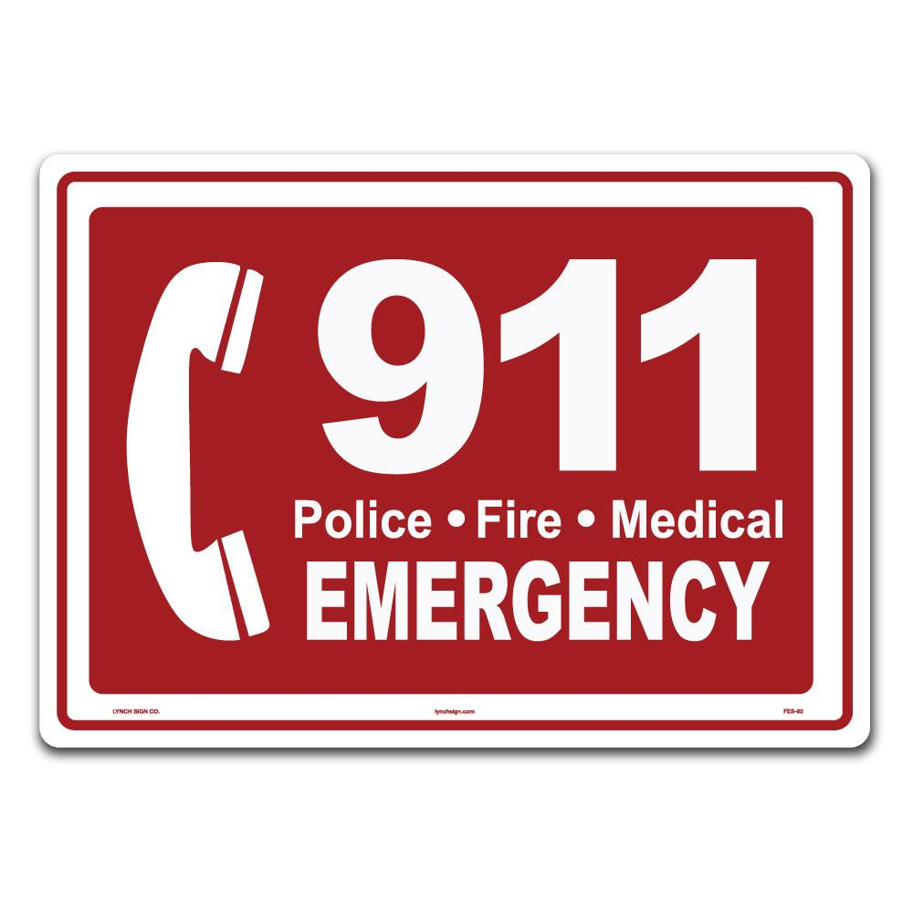
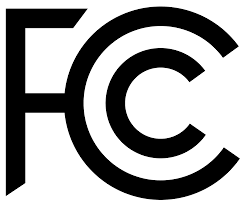

Emergency Numbers Offline
 For hours on an April day this year, 6,600 emergency calls from people in seven states didn't reach responders. The 911 outage affected 11 million people; in Washington state, every single person was affected.
The Cause
According to the report, the outage was caused by a simple coding error. A Colorado-based company, Intrado, Inc., which many service providers rely on for 911 infrastructure services, failed to properly route calls to emergency responders because of a bug in its software. Essentially, the coding error caused the system to stop giving unique IDs to 911 callers, and instead began counting them, one after the other, in one large set. When the set reached its pre-determined limit, the calls stopped coming through. Intrado's system, because of the coding error, failed to realize there was a widespread problem. The resulting 911 outage disconnected services in North Carolina, South Carolina, Pennsylvania, California, Minnesota, and Florida, but the worst problems were in Washington state, where every emergency service system was affected to various degrees.
"It could have been prevented. But it was not.”
One of the most striking details from the report, which relied on "confidential reports, public comments, and related documents," found that the system could have been fixed almost as soon as the outage started. Intrado operates a so-called "redundant hub" in Miami, where emergency calls can be re-routed. But because the problems were not swiftly identified, the outage went on for six hours. When the calls were finally sent through Miami, service was immediately restored.
Learning from our errors
 FCC (Federal Communications Commission) takes several lessons from the outage and followup investigation. The seven-state outage may have been an outlier in size, but hardly in type. Similar 911 outages are more frequent than many people would expect, and the FCC points out in its report that "sunny day outages" — where external problems aren't the cause — seem to be on the rise. Partly, the problem stems from attempts to reconcile aging emergency infrastructure with new mobile technology. Both carriers and 911 centers may be taking shortcuts when setting up their emergency systems. While it's recommended that systems have multiple failsafes to work as backup in case of problems, many don't, opening the door for "single-point" failures, where a minor problem at one point may cause the entire system to fail. When multiple carriers outsource their 911 responsibilities to the same third-party, as happened in the April outage, the problems can be exacerbated: communication between so many companies becomes a challenge, and it becomes less clear who needs to be held accountable in an emergency. The FCC's report ends on a less than hopeful note: "As the Nation transitions to new methods of communications, we need to take care to ensure that our inherent trust in the 911 system does not get lost in that transition."